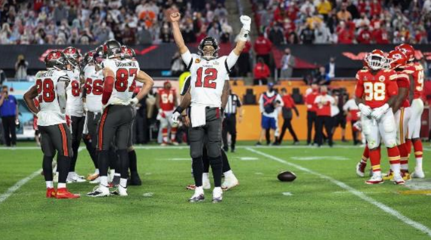

Finał Super Bowl

Za nami sezon 2020 w NFL zwieńczony takim Super Bowl, do jakiego fani przywykli,
bo znów wygrała drużyna Toma Brady'ego. Ale to triumf wyjątkowy. Nie był to tak
zacięty mecz, jakiego się spodziewaliśmy, ale wciąż działy się rzeczy historyczne.
Mistrz National Football Conference (NFC), Tampa Bay Buccaneers, pokonał mistrza
Konferencji Futbolu Amerykańskiego (AFC), Kansas City Chiefs, 31–9. Mecz odbył się
7 lutego 2021 roku na stadionie Raymond James Stadium w Tampa na Florydzie,
macierzystym stadionie drużyny Buccaneers, po raz pierwszy, kiedy drużyna gościła
Super Bowl.
Gdyby jednak całe jednostki mogły wygrać Super Bowl MVP, tegoroczna nagroda
niewątpliwie trafiłaby do obrony Buccaneers Todda Bowlesa: grupa ograniczyła
Mahomesa do podania 26 z 49 na 270 jardów i pociągnęła za sobą dwa przechwyty.
Debiutant biegnący z powrotem Clyde Edwards-Helaire był czołowym zawodnikiem Chiefs
z 64 jardami, podczas gdy Travis Kelce prowadził wszystkich odbierających z 10 przyjęciami
i 133 jardami. Tyreek Hill złapał siedem podań na 67 jardów.
Zwycięstwo Buccaneers było ich drugim i uczyniło z nich jedyną drużyną inną niż Baltimore
Ravens, która była niepokonana w wielu Super Bowls. Zakończyli sezon regularny z
rekordem 11: 5 i wygraną z dziką kartą, aby awansować do drugiego występu w Super
Bowl dzięki kilku nowym nabytkom, w szczególności weteranowi rozgrywającemu Tomowi
Brady'emu w swoim pierwszym sezonie poza New England Patriots . Chiefs, z pomocą
swojego najwyższego rangą ataku, zakończyli sezon regularny z najlepszym w lidze
rekordem 14-2, aby awansować do czwartego występu w Super Bowl. Kansas City weszło
do gry faworyzowane jako zwycięstwo, ale przegrały ofensywne walki i kosztowne rzuty
karne. Po raz pierwszy pod rozgrywającym i panującym MVP Super Bowl, Patrickiem
Mahomesem , Chiefs nie zdołał zdobyć przyłożenia i przegrali dwucyfrową liczbą, co czyni
ich również trzecią drużyną Super Bowl, która nie zdobyła przyłożenia. Popełnili 11 rzutów
karnych na 120 jardów, w tym rekordowe osiem rzutów karnych za 95 jardów w pierwszej
połowie, z których większość skierowana była przeciwko obronie. Buccaneers wykorzystali
te błędy, aby w połowie spotkania objąć dowodzenie 21: 6 i zachować kontrolę do końca
meczu. Brady, który również poprawił swoje rekordy graczy w występach w Super Bowl w
wieku 10 lat i wygrywa w wieku siedmiu lat, został mianowany MVP Super Bowl po raz piąty
i był pierwszym, który otrzymał tę nagrodę. W grze stał się najstarszym graczem, który
kiedykolwiek pojawił się w meczu Super Bowl w wieku 43 lat, a tym samym najstarszym,
który wygrał Super Bowl jako początkowy rozgrywający i najstarszym, który wygrał MVP
nagroda, podczas gdy Bruce Arians był najstarszym trenerem, który wygrał Super Bowl w
wieku 68 lat. Brady również poprawił kilka osobistych rekordów, które już posiadał.
Jak podają amerykańskie media – Super Bowl 2021 w Stanach Zjednoczonych obejrzało
średnio 91,63 milionów osób. Jest to najniższy wynik od 14 lat.
W przyciągnięciu widzów nie pomógł nawet The Weeknd. Kanadyjska megagwiazda
wystąpiła podczas tegorocznego Halftime Show wykonując mieszankę swoich
największych przebojów, m.in. „Starboy”, „Can’t Feel My Face”, „I Feel It Coming” oraz hit
2020 roku „Blinding Lights”. Opublikowane na YouTube nagranie z koncertu wokalisty, na
ten moment obejrzano niecałe 18 mln. razy. Dla porównania zeszłoroczne show, podczas
którego zaprezentowały się Shakira i Jennifer Lopez w podobnym czasie zgarnęło 97 mln.
wyświetleń w tym serwisie, natomiast samo Super Bowl przyciągnęło wtedy przed
ekrany 101,32 mln. widzów. Ze względu na protokoły COVID-19 ograniczające pojemność
stadionu do 25 000 kibiców, był to najmniej uczęszczany Super Bowl.